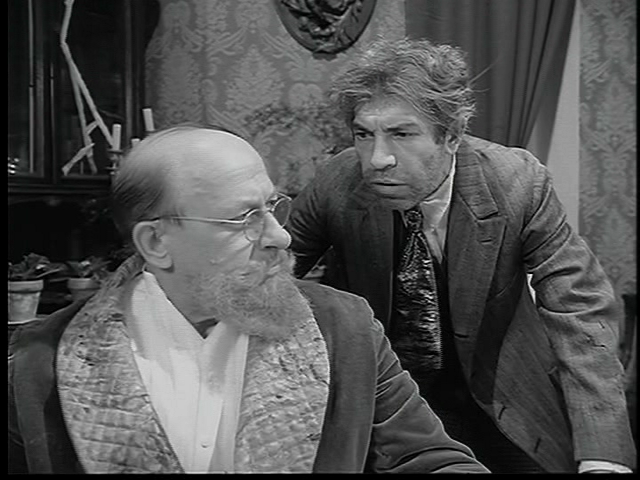
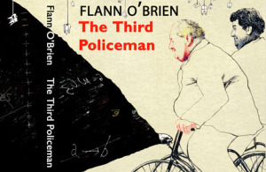

Ba Bulgakov Studies
"Why has the carpet been removed from the front staircase? Did Marx forbid people to keep their staircases carpeted? Did Karl Marx say anywhere
that the front door of No. 2 Kalabukhov House in Prechistenka Street must be boarded up so that people have to go round and come in by the back door? What good does it do anybody? Why can’t the proletarians leave their galoshes downstairs instead of dirtying the staircase?’
‘But the proletarians don’t have any galoshes, Philip Philipovich,’ stammered the doctor."
MA Irish Surrealism
“The gross and net result of it is that people who spent most of their natural lives riding iron bicycles over the rocky roadsteads of this parish get their personalities mixed up with the personalities of their bicycle as a result of the interchanging of the atoms of each of them and you would be surprised at the number of people in these parts who are nearly half people and half bicycles...when a man lets things go so far that he is more than half a bicycle, you will not see him so much because he spends a lot of his time leaning with one elbow on walls or standing propped by one foot at kerbstones.”

Research in Broken Spirituality
Funding oppertunity : Telekenetics
There's a whole generation of scanners soldiers just a few months away from being born. We'll find them. Train them to be like us. Not like Obrist and their band of cripples. We'll bring the world of normals to their knees. We'll build an empire so brilliant, so glorious. We'll be the envy of the whole planet.